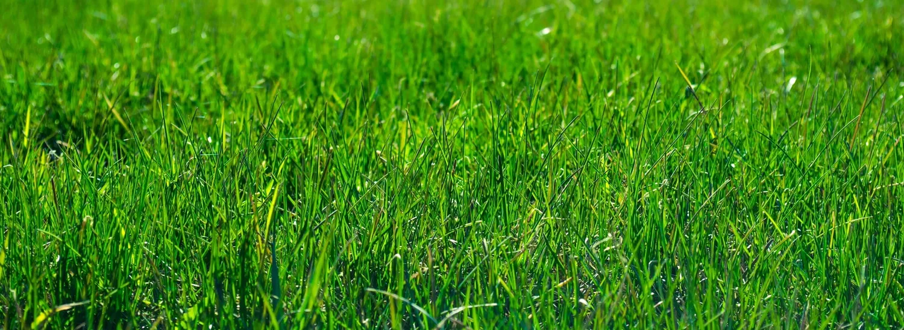
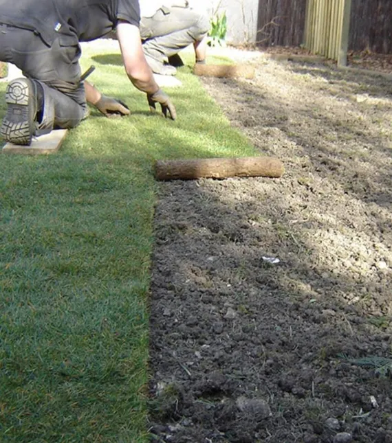
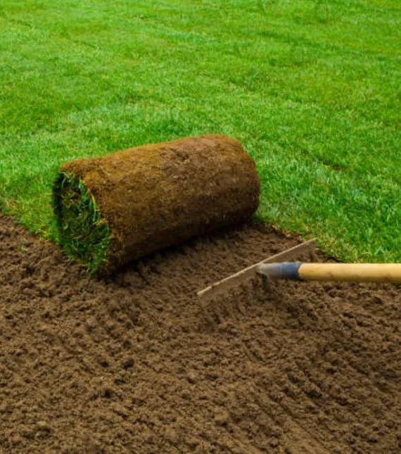

Lagrene Paysagiste 59 : Votre créateur de pelouses personnalisées à Lille 59000
Création de pelouse à Lille
Lagrene Paysagiste 59, à Lille, vous offre une expérience entièrement personnalisée pour la création de votre pelouse. Leur approche sur mesure est façonnée par vos préférences esthétiques, l’usage spécifique que vous faites de votre espace extérieur, ainsi que les caractéristiques uniques de votre terrain. Que vous désiriez une pelouse robuste, adaptée à un fort trafic, une pelouse facile à entretenir ou tout simplement une pelouse à la beauté éblouissante, Lagrene crée la pelouse idéale qui s’intègre parfaitement à votre jardin. Leur engagement envers une compréhension approfondie de vos besoins garantit une pelouse sur mesure qui dépasse vos attentes, transformant ainsi votre espace extérieur en une oasis de verdure répondant parfaitement à vos souhaits. Obtenez vite un devis et ne perdez pas de temps pour démarre votre projet.
Notre savoir-faire
Pelouse idéale avec Lagrene
Lagrene, reconnu pour son savoir-faire à Lille, se porte garant de créer la pelouse parfaite. Leur service dépasse les attentes habituelles pour offrir une verdure impeccable. Chaque étape, de la préparation du sol à la sélection minutieuse des semences adaptées au climat local, est méticuleusement planifiée. Lagrene s’engage à garantir une pelouse éclatante et durable, embellissant votre jardin pour les années à venir. Leur approche holistique assure non seulement une pelouse esthétiquement attrayante, mais également une pelouse résiliente qui défie les saisons. Grâce à leur expertise, votre espace extérieur bénéficie d’une pelouse qui ne se contente pas de répondre à vos attentes, mais qui les transcende, transformant ainsi votre jardin en une oasis de verdure à admirer pour les années à venir.

Transformez votre jardin avec la pelouse de vos rêves à Lille
Lagrene vous invite à faire de votre jardin à Lille un véritable espace de rêve ! Leur service de création de pelouse est bien plus qu’une simple prestation, c’est une véritable transformation verte. Ils métamorphosent les espaces ternes en des zones de détente luxuriantes. Lagrene sélectionne avec soin des variétés d’herbes spécifiques, adaptées à votre terrain, afin d’assurer une pelouse uniforme, dense et résistante. Résultat : une beauté verdoyante qui persiste toute l’année, offrant à votre espace extérieur une esthétique enviable et une sensation de fraîcheur constante. Grâce à Lagrene, votre jardin devient un lieu où la nature s’épanouit pleinement, vous offrant un coin de paradis au cœur de la ville.
Création de pelouse naturelle : la signature verte
Lagrene Paysagiste 59, renommé pour sa signature verte à Lille, excelle dans la création de pelouses naturelles exceptionnelles. Leur approche repose sur des pratiques respectueuses de l’environnement, favorisant des méthodes naturelles pour concevoir une pelouse qui se fond harmonieusement dans votre écosystème local. Chaque étape du processus est soigneusement orientée vers la préservation de l’environnement, offrant ainsi un espace verdoyant et naturellement accueillant. Lagrene s’engage à créer une pelouse qui va au-delà de l’esthétique, une pelouse qui devient un élément vivant de votre environnement extérieur. Leur expertise combine harmonieusement beauté et respect de la nature, créant ainsi des espaces verts qui invitent à la détente et à l’harmonie avec la nature environnante.

Créez une pelouse exceptionnelle pour un jardin sublime
Lagrene se distingue à Lille pour la création de jardins exceptionnels, mettant en avant leur expertise dans la conception de pelouses. Leur service méticuleux s’engage à offrir des pelouses d’une qualité remarquable. Chaque étape du processus, du nivellement du sol à l’ensemencement minutieux, est exécutée avec une précision inégalée. Chaque brin d’herbe est positionné avec soin pour créer une pelouse d’une beauté saisissante, transformant votre jardin en un espace de vie remarquable. Lagrene s’efforce de faire de votre pelouse la pièce maîtresse de votre extérieur, un point central qui reflète la perfection de leur travail. Avec leur engagement envers la qualité et leur souci du détail, chaque parcelle de votre jardin devient une œuvre d’art verdoyante, prête à être admirée et appréciée à tout moment.
Expertise combinant savoir-faire moderne et expertise traditionnelle
Lagrene incarne l’excellence en matière de création de pelouses à Lille, définissant une norme inégalée dans ce domaine. Leur approche se distingue par une combinaison experte de savoir-faire moderne et de pratiques traditionnelles, générant des pelouses d’une qualité exceptionnelle. Chaque intervention de Lagrene représente un travail méticuleux et minutieux, où chaque brin d’herbe est positionné avec précision pour créer des espaces verts époustouflants. Leur dévouement pour l’excellence se reflète dans la perfection de chaque parcelle de pelouse, transformant ainsi votre espace extérieur en un spectacle naturel et éblouissant. Avec Lagrene à la barre, chaque coin de votre jardin ou espace vert devient une œuvre vivante, où la verdure est synonyme d’esthétique raffinée et d’expertise incomparable
Demander un devis gratuit
Nos autres services